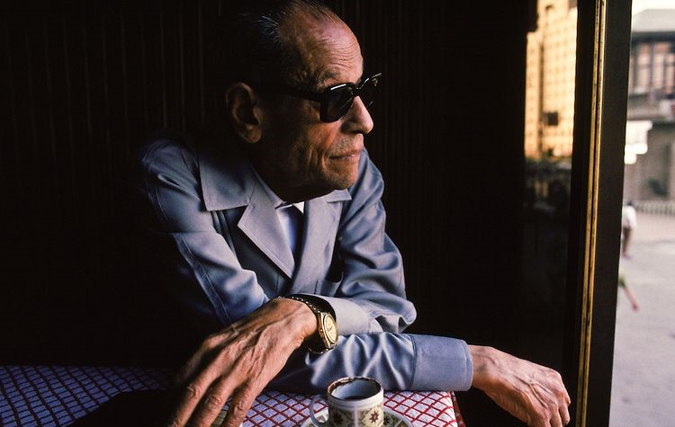

Naguib Mahfouz
Naguib Mahfouz Abdelaziz Ibrahim Ahmed Al-Basha was an Egyptian writer who won the 1988 Nobel Prize in Literature. Mahfouz is regarded as one of the first contemporary writers in the Arabic literature,along with Taha Hussein, to explore themes of existentialism.
Born in Cairo in 1911, Naguib Mahfouz began writing when he was seventeen. His first novel was published in 1939 and ten more were written before the Egyptian Revolution of July 1952, when he stopped writing for several years. One novel was republished in 1953, however, and the appearance of the Cairo Triology, Bayn al Qasrayn, Qasr al Shawq, Sukkariya (Between-the-Palaces, Palace of Longing, Sugarhouse) in 1957 made him famous throughout the Arab world as a depictor of traditional urban life. With The Children of Gebelawi (1959), he began writing again, in a new vein that frequently concealed political judgements under allegory and symbolism. Works of this second period include the novels, The Thief and the Dogs (1961), Autumn Quail (1962), Small Talk on the Nile (1966), and Miramar (1967), as well as several collections of short stories.
Until 1972, Mahfouz was employed as a civil servant, first in the Ministry of Mortmain Endowments, then as Director of Censorship in the Bureau of Art, as Director of the Foundation for the Support of the Cinema, and, finally, as consultant on Cultural Affairs to the Ministry of Culture. The years since his retirement from the Egyptian bureaucracy have seen an outburst of further creativity, much of it experimental. He is now the author of no fewer than thirty novels, more than a hundred short stories, and more than two hundred articles. Half of his novels have been made into films which have circulated throughout the Arabic-speaking world. In Egypt, each new publication is regarded as a major cultural event and his name is inevitably among the first mentioned in any literary discussion from Gibraltar to the Gulf.
.jpg)
.jpg)